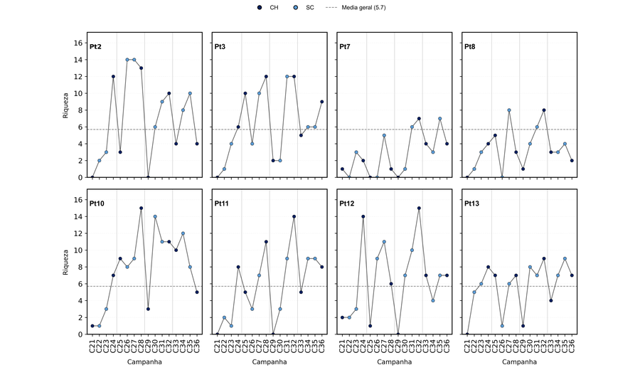
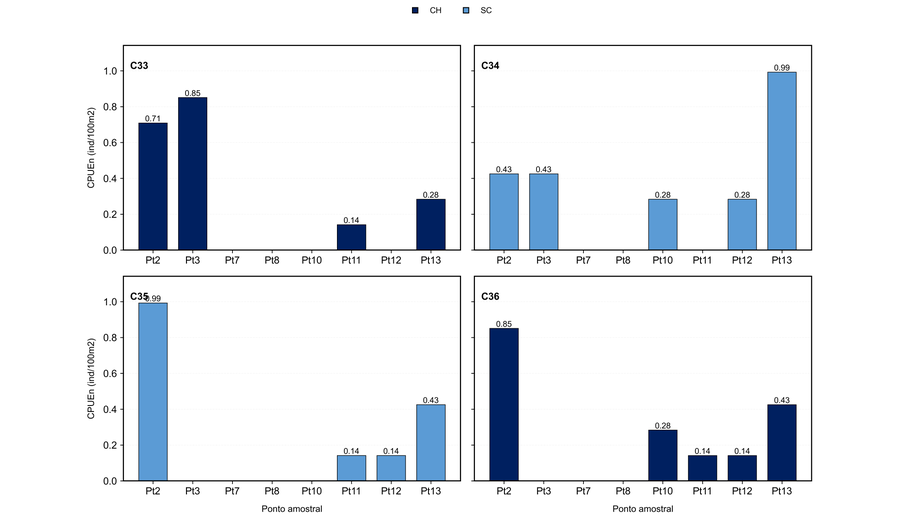
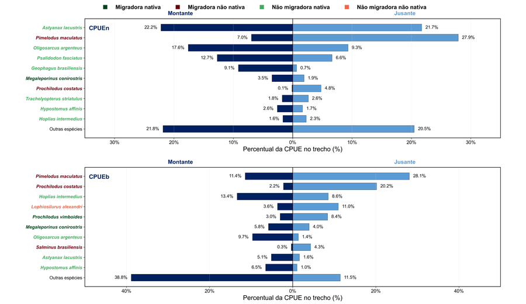
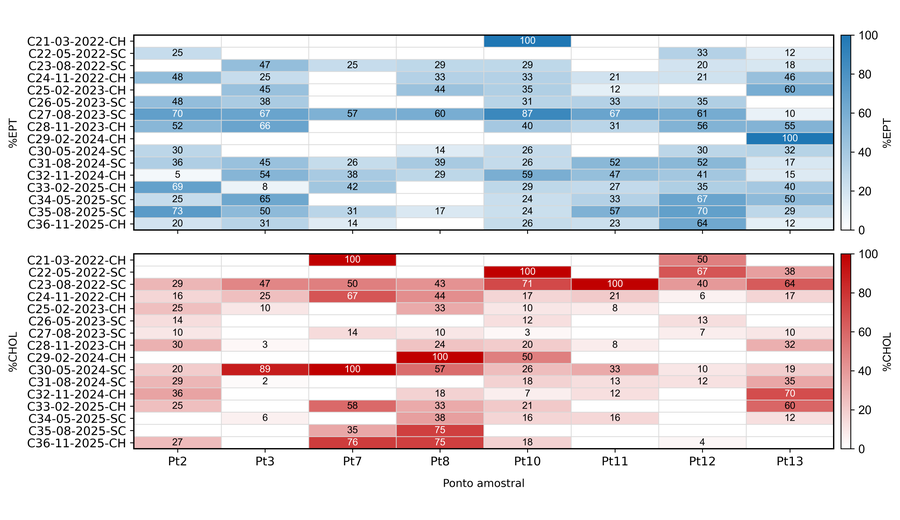
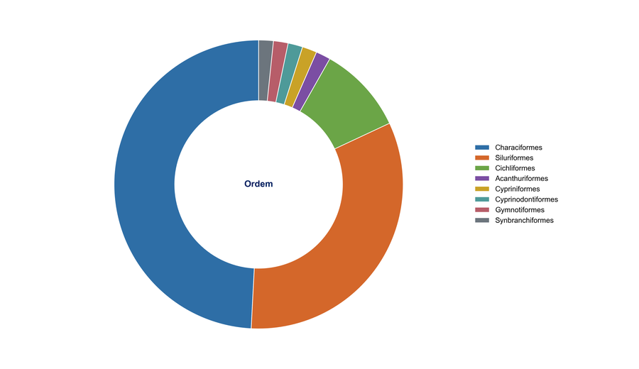
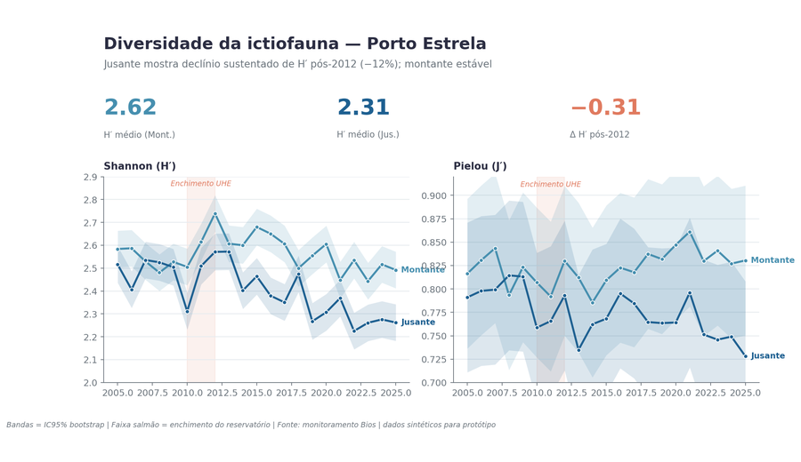

Fluxo de decisao
Confirmar fonte, grupos, campanhas e pontos.
Classificar volume temporal e espacial.
Diagnostico, tendencia, validacao ou sintese.
Selecionar blocos analiticos necessarios.
Escolher formas que cabem no layout.
Registrar decisao antes de rodar.
Classificacao rapida
Poucas campanhas
Comparacao direta e leitura descritiva.
Serie media
Paineis e comparacao temporal moderada.
Serie longa
Minigraficos, agregacao anual e sintese.
Muitos pontos
Rankings, mapas e agrupamentos por trecho.
Matriz de escolha
| Cenario | Priorizar | Usar com cuidado | Evitar |
|---|---|---|---|
| Poucas campanhas e poucos pontos | Barras, pontos, tabelas sinteticas | Mapas se houver coordenadas | Tendencias fortes |
| Poucas campanhas e muitos pontos | Rankings, mapas, barras horizontais | Facetamento por trecho | Paineis com excesso de categorias |
| Muitas campanhas e poucos pontos | Linhas, minigraficos, media geral | Modelos simples de tendencia | Barras por campanha muito longas |
| Muitas campanhas e muitos pontos | Minigraficos, paineis por ano, sinteses | Heatmaps como apoio | Um unico grafico com todos os rotulos |
| Esforco variavel | CPUE, padronizacao, alerta metodologico | Abundancia bruta como dado complementar | Comparar contagens sem esforco |
Cardapio real
M01 - Minigraficos temporais
Exemplo real: riqueza temporal por ponto em zoobentos, Herculano.

Usar quando ha muitas campanhas e a leitura por ponto e mais importante que uma matriz unica. A media geral ajuda a interpretar desvios por ponto.
Caminhos
Original: G:\Meu Drive\Opyta\Clientes\Clientes\Clientes\Geomil\Herculano - Informacoes Complementares Licenciamento Pilhas\Resultados\Bentos\02_grafico_riqueza_por_ponto_zoobentos.png
Lastro: outputs/_project_scripts/GEOHER001__monitoramento_de_ictio_e_bentos_herculano/zoobentos
M02 - Barras por ano
Exemplo real: CPUEn anual de ictiofauna, Herculano.

Usar quando barras por campanha ficam densas demais. A separacao por ano preserva o detalhe temporal sem sacrificar legibilidade.
Caminhos
Original: G:\Meu Drive\Opyta\Clientes\Clientes\Clientes\Geomil\Herculano - Informacoes Complementares Licenciamento Pilhas\Resultados\Ictiofauna\06_grafico_cpuen_por_ano_2025_ictiofauna.png
Lastro: outputs/_project_scripts/GEOHER001__monitoramento_de_ictio_e_bentos_herculano/ictiofauna
M03 - Ranking horizontal
Exemplo real: tornado de CPUE por especie, Porto Estrela.

Usar para comparar especies ou grupos entre trechos, margens ou areas. Funciona bem quando nomes longos inviabilizam barras verticais.
Caminhos
Original: G:\Meu Drive\Opyta\Clientes\Clientes\Clientes\Bios\Porto Estrela\Planilha\Resultados\resultados_ictiofauna_porto_estrela_producao_20260603\secao_661_cpue_todas_especies_tornado_especies.png
Lastro: outputs/_project_scripts/BIOPOR001__monitoramento_da_ictiofauna_da_uhe_porto_estrela
M04 - Indicadores ecologicos
Exemplo real: EPT/CHOL em zoobentos, Herculano.

Usar para leitura ecologica rapida. CHOL deve somar Chironomidae e Oligochaeta/Oligoqueta, com EPT em azul e CHOL em vermelho.
Caminhos
Original: G:\Meu Drive\Opyta\Clientes\Clientes\Clientes\Geomil\Herculano - Informacoes Complementares Licenciamento Pilhas\Resultados\Bentos\12_grafico_ept_chol_zoobentos.png
Lastro: outputs/_project_scripts/GEOHER001__monitoramento_de_ictio_e_bentos_herculano/zoobentos
M05 - Composicao taxonomica
Exemplo real: percentual por ordem, Porto Estrela.

Usar para explicar dominancia taxonomica. Quando houver muitas categorias, limitar top N e manter tabela completa como suporte.
Caminhos
Original: G:\Meu Drive\Opyta\Clientes\Clientes\Clientes\Bios\Porto Estrela\Planilha\Resultados\resultados_ictiofauna_porto_estrela_producao_20260603\figura_11a_percentual_ordem.png
Lastro: outputs/_project_scripts/BIOPOR001__monitoramento_da_ictiofauna_da_uhe_porto_estrela
M06 - Sintese executiva
Exemplo real: painel editorial de diversidade, Porto Estrela.

Usar para decisao e apresentacao. Resume metricas, tendencia e mensagem tecnica, mas nao substitui o caderno tecnico completo.
Caminhos
Original: G:\Meu Drive\Opyta\Clientes\Clientes\Clientes\Bios\Porto Estrela\Planilha\Resultados\_prototipos_design\NIVEL_B_dashboard_editorial.png
Lastro: outputs/_project_scripts/BIOPOR001__monitoramento_da_ictiofauna_da_uhe_porto_estrela
Fichas tecnicas base
Minigraficos temporais
Serie longa por ponto, com linha ou valor de media geral.
- Usar para riqueza, diversidade, CPUE e indicadores por ponto.
- Evitar quando a pergunta principal for composicao taxonomica detalhada.
- Referencia: GEOHER001 series longas.
Saidas: PNG + XLSX de dados + decisao registrada na recipe.
Barras por ano
Agrega campanhas em anos ou periodo hidrologico para reduzir excesso visual.
- Usar quando barras por campanha ficarem ilegíveis.
- Bom para CPUE, abundancia por classe, ordem ou origem.
- Evitar quando cada campanha individual for a pergunta central.
Saidas: PNG + XLSX com agregacao anual e valores originais.
Ranking horizontal
Ordena especies, pontos ou parametros para comparacao direta.
- Usar para top especies, maiores CPUEs, pontos mais ricos ou parametros criticos.
- Mostrar top N no grafico e tabela completa em XLSX.
- Evitar barras verticais com nomes longos.
Saidas: PNG + XLSX completo + nota de criterio de corte.
Indicadores ecologicos
Sintetiza resposta ambiental por grupos sensiveis e tolerantes.
- Usar para EPT/CHOL, BMWP e grupos funcionais.
- CHOL deve somar Chironomidae + Oligochaeta/Oligoqueta.
- Evitar se a classificacao taxonomica estiver incerta.
Saidas: PNG + tabela interpretativa + regra taxonomica documentada.
Composicao taxonomica top N
Mostra grupos dominantes sem esconder a tabela completa.
- Usar para composicao por ordem, familia, classe ou origem.
- Agrupar cauda longa como "Outros" quando necessario.
- Evitar roscas com muitas fatias pequenas.
Saidas: PNG + XLSX com composicao completa e agrupamento.
Sintese executiva
Condensa achados para decisao, sem substituir o caderno tecnico.
- Usar para abrir relatorio, reuniao ou validacao com cliente.
- Trazer poucos indicadores, tendencia e mensagem tecnica.
- Evitar quando ainda nao houve QA dos dados.
Saidas: PNG/HTML + quadro de achados e links para evidencias.
Modulos analiticos
Base obrigatoria
QAcompletudeesforco- campanhas x pontos
- lacunas e duplicidades
- nomenclatura e taxonomia
Temporal
minigraficosmedia geralano- riqueza por campanha
- diversidade alfa
- CPUE e abundancia
Espacial
mapasrankingstrechos- comparacao de pontos
- montante/jusante
- areas controle/impacto
Taxonomico
top Nclassesordens- composicao por grupo
- ocorrencia e frequencia
- caracterizacao biologica
Indicadores
EPTCHOLBMWP- sensibilidade/tolerancia
- grupos funcionais
- sintese ecologica
Estrutura
betadendrogramaordenacao- similaridade
- turnover
- padroes comunitarios